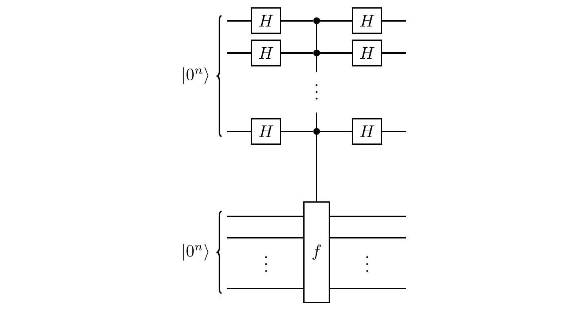

Quantum Boolean function evaluation
In quantum computation, all elementary operations are reversible (unitary), so we compute Boolean functions in a reversible fashion as
|x\rangle|y\rangle \mapsto |x\rangle|y\oplus f(x)\rangle.
The corresponding circuit diagram (for n=3) is shown in Figure 6.1.
Here we use two registers: the first one (counting from the top to the bottom of the circuit diagram) stores the arguments x, and the second one the values f(x).
More precisely, the value f(x) is added bit-wise to the pre-existing binary value y of the second register.
We usually set y=0 to get
|x\rangle|0\rangle \mapsto |x\rangle|f(x)\rangle.
Quantum Boolean function evaluation is a special case of the generalised x-controlled-U on two registers:
\sum_x |x\rangle\langle x|\otimes U_x
where U_x is either the identity \mathbf{1} (when f(x)=0) or the bit-flip X (when f(x)=1).
We may also write this as
\sum_x |x\rangle\langle x|\otimes X^{f(x)}.
Example
Consider the Boolean function f\colon\{0,1\}^2\to\{0,1\} given by
f(x)
=
\begin{cases}
1 &\text{if $x=01$,}
\\0 &\text{otherwise.}
\end{cases}
The evaluation |x\rangle|y\rangle \mapsto |x\rangle|y\oplus f(x)\rangle can be tabulated explicitly as
\begin{array}{cc}
|00\rangle|0\rangle \mapsto |00\rangle|0\rangle
& |00\rangle|1\rangle \mapsto |00\rangle|1\rangle
\\|01\rangle|0\rangle \mapsto |01\rangle|1\rangle
& |01\rangle|1\rangle \mapsto |01\rangle|0\rangle
\\|10\rangle|0\rangle \mapsto |10\rangle|0\rangle
& |10\rangle|1\rangle \mapsto |10\rangle|1\rangle
\\|11\rangle|0\rangle \mapsto |11\rangle|0\rangle
& |11\rangle|1\rangle \mapsto |11\rangle|1\rangle
\end{array}
and the expression \sum_x |x\rangle\langle x|\otimes X^{f(x)} becomes
\begin{aligned}
&|00\rangle\langle 00| \otimes \mathbf{1}
\\+ &|01\rangle\langle 01| \otimes X
\\+ &|10\rangle\langle 10| \otimes \mathbf{1}
\\+ &|11\rangle\langle 11| \otimes \mathbf{1}.
\end{aligned}
Finally, the matrix form looks like
\left[
\,
\begin{array}{c|c|c|c}
\begin{matrix}1&0\\0&1\end{matrix}
& \begin{matrix}0&0\\0&0\end{matrix}
& \begin{matrix}0&0\\0&0\end{matrix}
& \begin{matrix}0&0\\0&0\end{matrix}
\\\hline
\begin{matrix}0&0\\0&0\end{matrix}
& \begin{matrix}0&1\\1&0\end{matrix}
& \begin{matrix}0&0\\0&0\end{matrix}
& \begin{matrix}0&0\\0&0\end{matrix}
\\\hline
\begin{matrix}0&0\\0&0\end{matrix}
& \begin{matrix}0&0\\0&0\end{matrix}
& \begin{matrix}1&0\\0&1\end{matrix}
& \begin{matrix}0&0\\0&0\end{matrix}
\\\hline
\begin{matrix}0&0\\0&0\end{matrix}
& \begin{matrix}0&0\\0&0\end{matrix}
& \begin{matrix}0&0\\0&0\end{matrix}
& \begin{matrix}1&0\\0&1\end{matrix}
\end{array}
\,
\right]
As you can see, this is a diagonal block matrix: a (4\times 4) matrix with (2\times 2) matrices as entries.
The rows and the columns of the (4\times 4) matrix are labelled by the binary strings 00, 01, 10, 11, and the (2\times 2) matrices on the diagonal represent operations applied to the qubit in the second register.
Here all of them are the identity \mathbf{1} except the (01, 01) entry, which represents the bit-flip X.
This is because f(01)=1, and f(x)=0 for all other binary strings x.
Oracles and query complexity
The computational power of quantum interference was discovered by counting how many times certain Boolean functions have to be evaluated in order to find the answer to a given problem.
Imagine a “black box” (also called an oracle) that computes some fixed Boolean function, but whose inner workings are unknown to us, and a scenario in which one wants to learn about a given property of the Boolean function but has to “pay” (in energy, or in money!) for each use (often referred to as a query) of the box.
In such a setting, the objective is to minimise number of queries to the oracle while finding out as much information as possible about the function computed by the oracle.
For this purpose, we ignore everything that happens inside the black box: the Boolean function evaluation counts as just one computational step.
Deutsch’s algorithm
We start, once more, with the simplest quantum interference circuit:
Suppose you can prepare the input, you can read the output, you cannot see the phase shifter, but you are promised that the phase shifter is set to either \varphi=0 or \varphi=\pi.
Can you tell which value \varphi has been set to?
Of course you can!
One way of doing it is to set your input to |0\rangle and check the output: for \varphi=0 the output is always |0\rangle, and for \varphi=\pi it is always |1\rangle.
A single run of the interference experiment is sufficient to determine the difference.
The first quantum algorithm, proposed by David Deutsch in 1985, is very much related to this effect, but where the phase setting is determined by the Boolean function evaluation via the phase kick-back.
We are presented with an oracle that computes some unknown function f\colon\{0,1\}\to\{0,1\}.
Note that there are only four possibilities for what f can be: it could be one of two constant functions (i.e. those where f(0)=f(1)), or one of two “balanced” functions (i.e. those where f(0)\neq f(1)).
| constant |
\begin{matrix}0\\1\end{matrix} |
\begin{matrix}0\\1\end{matrix} |
| balanced |
\begin{matrix}0\\1\end{matrix} |
\begin{matrix}1\\0\end{matrix} |
Our task is to determine, using the fewest queries possible, whether the function computed by the oracle is constant or balanced.
Note that we are not asked for the particular values f(0) and f(1), but only whether the two values are the same or different.
Classical intuition tells us that we have to evaluate both f(0) and f(1) and compare them, which involves evaluating f twice.
But, in the quantum setting, we can solve this problem with a single function evaluation, using the following circuit.
First register: 1 qubit. Second register: 1 qubit.

During the function evaluation, the second register “kicks back” the phase factor (-1)^{f(x)} in front of |x\rangle, but the state of the second register remains unchanged; the first register is modified as follows:
\begin{aligned}
|0\rangle
&\overset{H}{\longmapsto}
|0\rangle+|1\rangle
\\&\overset{f}{\longmapsto}
(-1)^{f(0)}|0\rangle + (-1)^{f(1)}|1\rangle
\\&\quad\equiv
|0\rangle + (-1)^{f(0)\oplus f(1)}|1\rangle
\\&\overset{H}{\longmapsto}
|f(0)\oplus f(1)\rangle.
\end{aligned}
This evolution can be represented by the circuit diagram

where the relative phase is \varphi = (-1)^{f(0)\oplus f(1)}.
The first qubit ends in state |0\rangle if the function f is constant, and in state |1\rangle if the function is balanced, and the standard measurement distinguishes these two cases with certainty.
Deutsch’s result laid the foundation for the new field of quantum computation, and was followed by several other quantum algorithms for various problems.
They all seem to rest on the same generic sequence: a Hadamard transform, followed by a function evaluation, followed by another Hadamard (or Fourier) transform.
As we shall see in a moment, in some cases (such as in Grover’s search algorithm) this sequence is repeated several times.
Let me now take you through the three early quantum algorithms, each one offering a higher-order speed-up when compared to their classical analogues than the last.
Three more quantum algorithms
Along with Deutsch’s algorithm, there are three more fundamental quantum algorithms that we will study here.
Each one was designed to solve a different specific problem, but they all share some similarity: this omnipresent sequence of Hadamard, function evaluation, Hadamard.
The Bernstein-Vazirani algorithm
We are presented with an oracle that computes some unknown function f\colon\{0,1\}^n\to\{0,1\}, but we are promised that f is of the form
f(x) = a\cdot x
\equiv (a_1\cdot x_1) \oplus \ldots \oplus (a_n\cdot x_n)
for some fixed a\in\{0,1\}^n.
Our task is to determine, using the fewest queries possible, the value of the n-bit string a.
It’s quite easy to see how to do this classically: if we input the value x=00\ldots010\ldots0, with the 1 in the m-th bit, then f(x) is simply the m-th bit of a; after n such calls, we can evaluate every bit value.
It is also clear that there cannot exist a better classical algorithm: each call to the oracle teaches us exactly one bit of information, and since we must learn n bits, we must query it n times.
In contrast, by running the circuit below, it is possible to determine the value of a with a single (!) call to the oracle.
First register: n qubits. Second register: 1 qubit.

N.B. The “\ldots” in the circuit means “there are more wires here but they are identical (apart from the numbering) to the ones above”.
You might also see other notation to denote this, such as

or even simply

Stepping through the execution of the circuit (and ignoring the second register, which remains in state |-\rangle throughout), we obtain
\begin{aligned}
|0\rangle
&\overset{H}{\longmapsto}
\left(\frac{1}{\sqrt2}\right)^n \sum_{x\in\{0,1\}^n} |x\rangle
\\&\overset{f}{\longmapsto}
\left(\frac{1}{\sqrt2}\right)^n \sum_{x\in\{0,1\}^n} (-1)^{a\cdot x}|x\rangle
\\&\overset{H}{\longmapsto}
\left(\frac{1}{\sqrt2}\right)^n \sum_{x\in\{0,1\}^n}
\left[
(-1)^{a\cdot x} \left(\frac{1}{\sqrt2}\right)^n
\sum_{y\in\{0,1\}^n} (-1)^{y\cdot x} |y\rangle
\right]
\\&\quad= \left(\frac12\right)^n \sum_{y\in\{0,1\}^n}
\left[
\sum_{x\in\{0,1\}^n} (-1)^{(a\oplus y)\cdot x}
\right]
|y\rangle
\\&\quad=|a\rangle
\end{aligned}
where we write the second Hadamard transform as
|x\rangle
\mapsto
\left(\frac{1}{\sqrt2}\right)^n \sum_{y\in\{0,1\}^n} (-1)^{y\cdot x}|y\rangle
and where we have used the fact (which you should prove!) that, for any y\in\{0,1\}^n,
\sum_{x\in\{0,1\}^n} (-1)^{x\cdot y}
=
\begin{cases}
0 &\text{if $y\neq0$}
\\2^n &\text{if $y=0$}
\end{cases}
This lets us write
\sum_{x\in\{0,1\}^n} (-1)^{(a\oplus y)\cdot x}
=
\begin{cases}
0 &\mbox{if $y\neq a$}
\\2^n &\mbox{if $y=a$.}
\end{cases}
If you take the sum over x, then all the terms always cancel out unless a\oplus y = 00\ldots0, i.e. unless y=a.
Thus the standard bit-by-bit measurement of the first register gives the value of a and solves the problem with a single call to the oracle.
Note that the algorithm follows the same pattern as Deutsch’s algorithm: Hadamard, function evaluation, Hadamard, i.e. a generic quantum interference pattern.
Grover’s search algorithm
The next algorithm we will study aims to solve the problem of searching for a specific item in an unsorted database.
Think about an old-fashioned phone book: the entries are typically sorted alphabetically, by the name of the person that you want to find.
However, what if you were in the opposite situation: you had a phone number and wanted to find the corresponding person’s name?
The phone book is not sorted in that way, and to find the number (and hence name) with, say, 50% probability, you would need to search through, on average, 50% of the entries.
In a large phone book, this would take a long time.
While this might seem like a rather contrived problem (a computer database should always maintain an index on any searchable field), many problems in computer science can be cast in this form, i.e. that of an unstructured search.
We are presented with an oracle that computes some unknown function f\colon\{0,1\}^n\to\{0,1\}.
Our task is to find, using the fewest queries possible, an input x\in\{0,1\}^n such that f(x)=1.
Suppose that we know that, amongst the N=2^n binary strings, there are M\ll N which are “tagged”, i.e. on which f evaluates to 1.
There is no structure in the database, and so any classical search requires around N/M steps, i.e. the function f must be evaluated roughly N/M times.
In contrast, there is a quantum search algorithm, implemented by the circuit below, that was proposed in 1996 by Lov Grover, and which requires only roughly \sqrt{N/M} steps.
First register: n qubits. Second register: 1 qubit.

where f_0 tags the binary string of n zeros: f_0(x)=1 if x=00\ldots0, and f_0(x)=0 otherwise.
We can recognise the typical Hadamard, function evaluation, Hadamard sequence, and we can see that the second register (the bottom qubit, in state |-\rangle) plays an auxiliary role: the real action takes place in the first register.
However, unlike the previous algorithms, a single call to the oracle does not do very much, and we have to build up the quantum interference in the first register through repeated calls to the oracle (without any intermediate measurements!).
Here, the basic step is the Grover iteration operator G, which is the boxed part of the circuit that we repeat over and over.
After O(2^{n/2}) applications of G, we measure the first register bit-by-bit and obtain the value of |z\rangle, which is such that, with “high” probability, f(z)=1.
In order to actually see how this algorithm works, and to justify our claim that it gives what we are searching for “with high probability”, we can take a more geometric approach.
First, we define two orthonormal vectors in the Hilbert space of the first register:
\begin{aligned}
|a\rangle
&= \frac{1}{\sqrt{N-M}} \sum_{x\in f^{-1}(0)} \!\!\!\!|x\rangle
\\|b\rangle
&= \frac{1}{\sqrt{M}} \sum_{x\in f^{-1}(1)} \!\!\!\!|x\rangle
\end{aligned}
where f^{-1}(i) = \{x\in\{0,1\}^n \mid f(x)=i\}.
These two vectors span a two-dimensional subspace in which the search will take place.
This subspace contains the equally-weighted superposition |s\rangle of all binary strings of length n:
\begin{aligned}
|s\rangle
&= \frac{1}{\sqrt{N}} \sum_x|x\rangle
\\&= \sqrt{\frac{N-M}{N}}|a\rangle + \sqrt{\frac{M}{N}}|b\rangle
\\&= (\cos\alpha)|a\rangle + (\sin\alpha)|b\rangle
\end{aligned}
where we have parametrised \sqrt{\frac{N-M}{N}} as \cos\alpha, and \sqrt{\frac{M}{N}} as \sin\alpha, with \alpha\approx\sqrt{\frac{M}{N}}, since N\gg M.
The state |s\rangle is our starting input for our sequence of Grover iterations, and we will show that, applying G, when restricting to the plane spanned by |a\rangle and |b\rangle, amounts to applying a rotation by angle 2\alpha.
Grover’s search algorithm can then be understood as a sequence of rotations which take the input state |s\rangle towards the target state |b\rangle.
To see this, note that the oracle induces the unitary transformation
f\colon |x\rangle \mapsto (-1)^{f(x)}|x\rangle
which we shall write as I_a = 2|a\rangle\langle a|-\mathbf{1}, and interpret as a reflection through the |a\rangle-axis.
In particular, evaluation of f_0 can be written as 2|0\rangle\langle 0|-\mathbf{1}, and thus thought of as a reflection through the |0\rangle-axis.
If we sandwich f_0 in between two Hadamards then we obtain I_s = 2|s\rangle\langle s|-\mathbf{1}, which is reflection through the |s\rangle-axis.
The Grover iteration operator G is the composition
G = I_s I_a.
Note also that I_a = 2|a\rangle\langle a|-\mathbf{1}= \mathbf{1}-2|b\rangle\langle b|.
Now recall the purely geometric fact that (working in 2-dimensional Euclidean space), if we have two intersecting lines L_1 and L_2, meeting with angle \theta, then reflecting an object through L_1 and then reflecting the resulting image through L_2 is the same as simply rotating the original object around the point of intersection L_1\cap L_2 by 2\theta.
The angle between |a\rangle and |s\rangle is \alpha, and so, each time G is applied, the vector is rotated (around the origin) by 2\alpha towards the |b\rangle-axis.
We just have to choose the right number r of steps such that we end up as close to the |b\rangle-axis as possible.
The state |s\rangle starts at angle \alpha to |a\rangle, and we should perform our final (and only) measurement when this angle is \pi/2, i.e. when (2r+1)\alpha = \pi/2, which gives
r \approx \frac{\pi}{4}\sqrt{\frac{N}{M}}.
So the quantum algorithm searches an unsorted list of N items in roughly \sqrt{N} steps: it offers a quadratic speed-up when compared to classical search, which can be of immense practical importance.
For example, cracking some of the popular ciphers, such as AES (Advanced Encryption Standard), essentially requires a search among many binary strings (called keys).
If these can be checked at a rate of, say, one million keys per second, then a classical computer would need over a thousand years to find the correct key, while a quantum computer using Grover’s algorithm would find it in less than four minutes.
Simon’s problem
Here we will see the simplest quantum algorithm that shows an exponential speed-up compared to the best classical algorithm.
We are presented with an oracle that computes some unknown function f\colon\{0,1\}^n\to\{0,1\}^n, but we are promised that f satisfies, for all x\in\{0,1\}^n,
f(x) = f(x\oplus s)
for some fixed s\in\{0,1\}^n, which we call the period of f.
Our task is to determine, using the fewest queries possible, the value of the n-bit string s.
Classically, this problem is exponentially hard.
We will not go through a detailed proof of this fact, but the intuition is reasonably simple: since there is no structure in the function f that would help us find its period s, the best we can do is evaluate f on random inputs and hope that we find some distinct x and x' such that f(x)=f(x'), and then we know that s=x\oplus y.
After having made m queries to the oracle, we have a list of m values of the tuple (x,f(x)); there are m(m-1)/2 possible pairs which could match within this list, and the probability that a randomly chosen pair match is 1/2^{n-1}.
This means that the probability of there being at least one matching pair within the list of m tuples is less than m^2/2^n.
Clearly, the chance of finding a matching pair is negligible if the oracle is queried on fewer than \sqrt{2^n} inputs.
The quantum case, on the other hand, gives a result with high probability within a linear number of steps.
The circuit that solves this problem, shown below, has a familiar Hadamard–function–Hadamard structure, but the second register has been expanded to n qubits.
First register: n qubits. Second register: n qubits.

Let’s follow the evolution of the two registers in this circuit.
We start off by preparing the equally-weighted superposition of all n-bit strings, and then query the oracle:
\begin{aligned}
|0^n\rangle|0^n\rangle
&\longmapsto
\frac{1}{\sqrt{2^n}} \sum_x |x\rangle|0^n\rangle
\\&\longmapsto
\frac{1}{\sqrt{2^n}} \sum_x |x\rangle|f(x)\rangle.
\end{aligned}
The second Hadamard transform on the first register then yields the final output state:
\frac{1}{2^n} \sum_{x,y} (-1)^{x\cdot y} |y\rangle|f(x)\rangle.
\tag{6.4.3.1}
Now, if we measure the second register before applying the second Hadamard transform to the first, we obtain one of the 2^{n-1} possible values of f(x), each equally likely.
Suppose that the outcome of the measurement is f(a).
Given that both a and a\oplus s are mapped to f(a) by f, the first register then collapses to the state
\frac{1}{\sqrt{2}}\big( |a\rangle + |a\oplus s\rangle \big).
The subsequent Hadamard transform on the first register then gives us the final state
\frac{1}{\sqrt{2^{n+1}}} \sum_y (-1)^{a\cdot y}
\Big( 1 + (-1)^{s\cdot y} \Big) |y\rangle|f(a)\rangle
=
\frac{1}{\sqrt{2^{n-1}}} \sum_{y\in s^\perp}
(-1)^{a\cdot y} |y\rangle|f(a)\rangle
where we have used the fact that (a\oplus s)\cdot y = (a\cdot y)\oplus(s\cdot y), and that 1+(-1)^{s\cdot y} can have only two values: either 2 (when s\cdot y = 0), or 0 (when s\cdot y = 1).
Now we measure the first register: the outcome is selected at random from all possible values of y such that a\cdot y = 0, each occurring with probability 1/(2^{n-1}).
In fact, we do not have to measure the second register at all: it was a mathematical shortcut, simply taken for pedagogical purposes.
Instead of collapsing the state to just one term in a superposition, we can express Equation (6.4.3.1) as
\frac{1}{2^n} \sum_{y,f(a)}
\Big( (-1)^{a\cdot y} + (-1)^{(a\oplus s)\cdot y} \Big) |y\rangle|f(a)\rangle
=
\frac{1}{2^n} \sum_{y,f(a)} (-1)^{a\cdot y}
\Big( 1 + (-1)^{s\cdot y} \Big) |y\rangle|f(a)\rangle
where the summation over f(a) means summing over all binary strings in the image of f.
The output of the algorithm is then
\frac{1}{2^{n-1}} \sum_{y\in s^\perp} |y\rangle
\sum_{f(a)} (-1)^{a\cdot y} |f(a)\rangle
and, again, the measurement outcome is selected at random from all possible values of y such that s\cdot y=0.
We are not quite done yet: we cannot infer s from a single output y.
However, once we have found n linearly independent strings y_1,y_2,\ldots,y_n, we can solve the n equations
\begin{aligned}
s\cdot y_1 &= 0
\\s\cdot y_2 &= 0
\\&\,\,\,\vdots
\\s\cdot y_n &= 0
\end{aligned}
to determine a unique value of s.
So we run this algorithm repeatedly, each time obtaining another value of y that satisfies s\cdot y = 0.
Every time we find some new value of y that is linearly independent of all previous ones, we can discard half the potential candidates for s.
The probability that y_1,\ldots,y_n are linearly independent is
\left( 1 - \frac{1}{2^n} \right)
\left( 1 - \frac{1}{2^{n-1}} \right)
\ldots
\left( 1 - \frac{1}{2} \right).
\tag{6.4.3.2}
Indeed, suppose that we have k linearly independent binary strings y_1,\ldots,y_k.
Then these strings span a subspace of size 2^k, consisting of all binary strings of the form \bigoplus_{i=1}^k b_i y_i, where b_1,\ldots,b_k\in\{0,1\}.
Now suppose we obtain some y_{k+1}.
It will be linearly independent from the y_1,\ldots,y_k if and only if it lies outside the subspace spanned by the y_1,\ldots,y_k, which occurs with probability 1-(2^k)/(2^n).
We can bound Equation (6.4.3.2) from below:
\left[
1 -
\left(
\frac{1}{2^n} + \frac{1}{2^{n-1}} + \ldots + \frac14
\right)
\right]
\cdot \frac12
\geqslant\frac14.
We conclude that we can determine s with some constant probability of error after repeating the algorithm O(n) times.
The exponential separation that this algorithm demonstrates between quantum and classical highlights the vast potential of a quantum computer to speed up function evaluation.